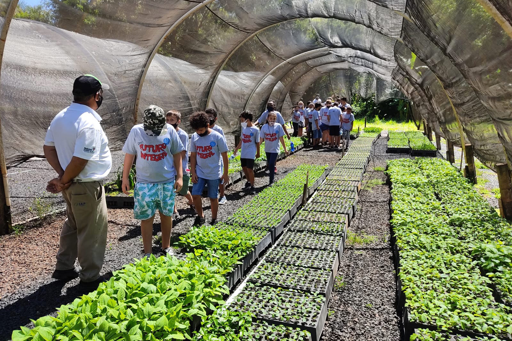
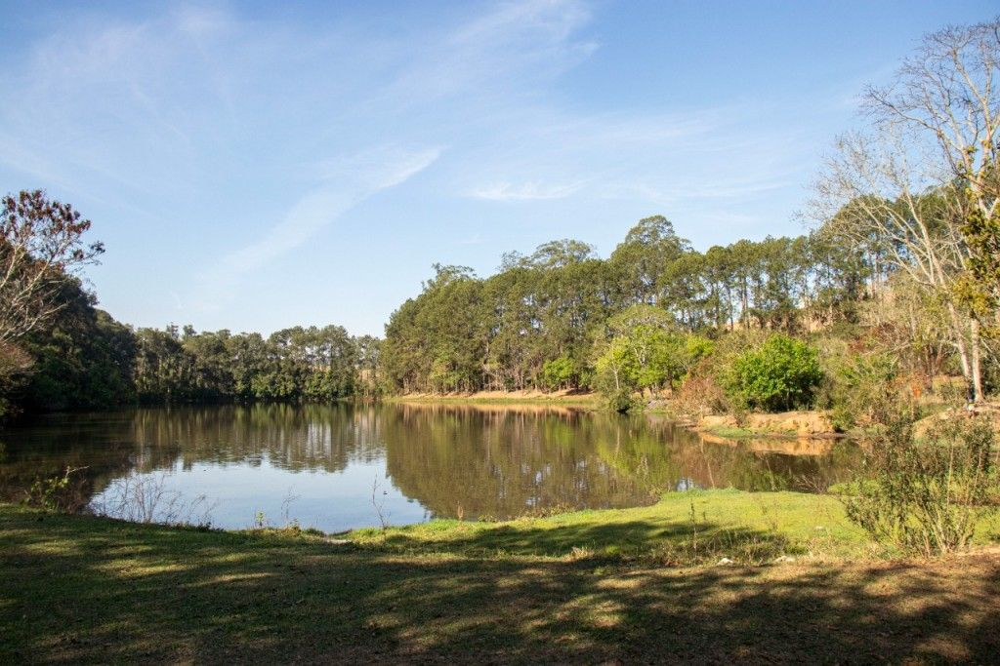
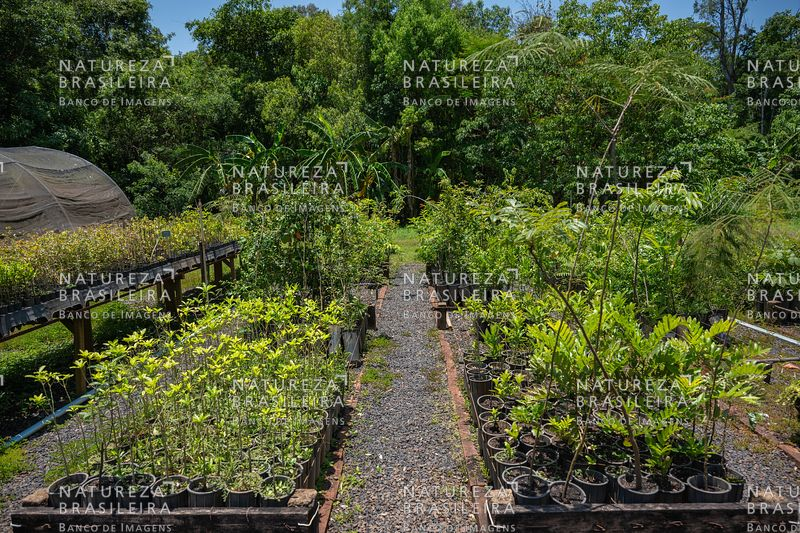

A visita ao horto foi uma ideia proposta pela coordenadora Vanessa, com o objetivo de aumentar nossa conscientização sobre a condição atual do planeta Terra. O tour começou às 8:00 do dia oito de agosto. Fomos levados em dois ônibus e conduzidos pela Estrada Água Feia até a chegada ao horto. Lá, nos foi apresentada a história do local e as atividades realizadas no instituto. Fomos informados de que mais de 60 mil mudas estão disponíveis para distribuição, e que até cem mudas podem ser retiradas sem custo. Também percorremos algumas trilhas em áreas florestais, que apresentavam uma grande variedade de flora.


